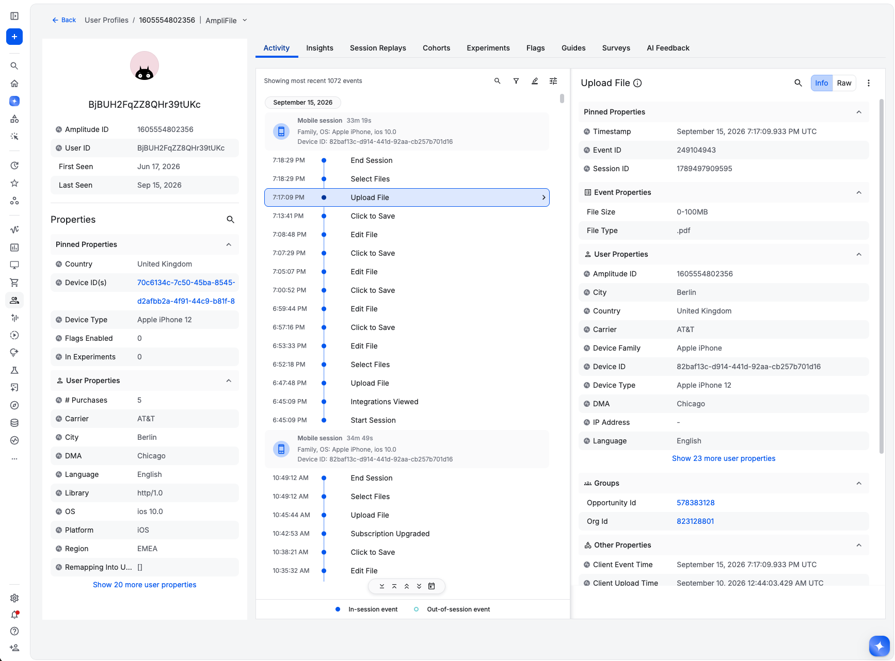

Seven tools for session 2. Examples use a made-up broadband and mobile retailer, so nothing here is a comment on any particular implementation. Adobe appears throughout as the reference frame, not as the subject.
This is the entire data model. Click any part for what it does and what it replaces.
Amplitude has two scopes and one mechanism that sits between them. Worth getting straight before you map anything across, because the third one is where most of the eVar behaviour ends up.
Describes the thing that happened. It travels with the event and is never carried to the next one.
plan_tier on a plan selection, error_code on an error, search_term on a search.
Describes the person. Set it once and it applies to every event afterwards until something changes it.
customer_segment, tenure_months, the plan they're currently on. It holds the current value, not the value at the time of any given event.
| Event | Event scopepage_section | User scopeaccount_id |
|---|
The event property is present only where it was sent. The user property is empty until login, then applies to everything after it — including, from that point on, when you look back at this user's profile.
Some context belongs to the journey rather than to one event or to the person: which campaign brought someone in, which page started the session, which recommendation led to an item. A persisted property takes an event property and applies allocation and expiration rules to it, so the value reaches events that never carried it.
Which value sticks: the first one, the latest one, or the earliest and latest known — the last two of which apply backwards as well as forwards.
How long it keeps applying. End of session, or a custom window such as 7 or 30 days.
| Event | campaign, as sent | Original | Most recent | First known | Last known |
|---|
page_path, Original, Session. Group purchases by where the session started, even though the purchase event never carried a page path.utm_campaign, Most recent, 7 days. Connects a marketing touch to a conversion days later without stamping UTMs on every event.discovery_method, Most recent, Session, bound to products.item_id. Each item in a cart keeps the search, recommendation or promo that led to it, so revenue attributes per product rather than crediting the whole order to one source. This is the piece that needs the array from tab 06.Most of the eVar model is here, split across two mechanisms. The settings map closely enough that reading an eVar's configuration usually tells you which one you want.
| eVar setting | Amplitude | Notes |
|---|---|---|
| Expire: Never | user property | Describes the person, so it belongs on the profile. |
| Expire: Hit / Page View | event property | Describes the occurrence. No persistence needed. |
| Expire: Visit | persisted property expiration: Session | The common case in most SDRs. |
| Expire: 30 Days | persisted property expiration: custom time | Same idea, longer window. |
| Allocation: Original Value (First) | Original | First value, never overwritten. |
| Allocation: Most Recent (Last) | Most recent | Direct equivalent. |
| Merchandising eVar bound to a product | item-level attribution | Bound to an item id inside the products array rather than by position in a delimited string. |
| — | First known / Last known | No eVar equivalent. These apply to events that already happened, which is useful when attribution data arrives after the event it describes. |
Scope decides where a thing appears when someone goes looking for it. Pick a type and see which parts of the interface it reaches.
Two of them you send. The third Amplitude works out. Here are four events from one person on two devices, which is the whole mechanism in one table.
| Device ID you send | User ID you send, once you know it | Event | Amplitude ID at the moment it arrived |
|---|
Anonymous, minted by the SDK, one per browser or app install. Present on every event. If you send nothing else, this is who the event belongs to.
Yours to define, and only present once you know who someone is. Whatever you decide a person is: a customer ID, an account ID, a resolved subscriber.
Internal, and the one that actually gets counted. Nothing you send is called amplitude_id — it's derived from the pattern of device and user IDs arriving together, and it can change after the fact.
That last part is the bit worth dwelling on. Flip the toggle above and watch row 3.
This is the user profile those four events produce. One person, one Amplitude ID, and both device IDs listed against it.

Step through each one and watch the three columns.
Everything above resolves to an individual. Some questions aren't about individuals — how is this business customer tracking, how many households upgraded, which accounts have gone quiet. Amplitude reports on users by default; the Accounts add-on adds group-level analysis so charts can count and segment by account instead.
A type and a value — account id: 4471, household: h_902. You define the types you need, and a user can belong to more than one.
Group properties describe the account rather than the person: plan count, contract value, segment.
Charts get a group option alongside users, so a funnel can count accounts that converted rather than people who clicked.
Cohorts can be group-level too, and dynamic group properties can carry a KPI — active users in the last 7 days, say — onto each account.
Both tools have something called a segment, and they mean roughly the same thing. The word without a counterpart is cohort. Pick a question and compare how each side expresses it, and what you can then do with the result.
Adobe gives you one products variable with positional string syntax. In Amplitude any property can hold an array, and you can have several on the same event. Edit the string and both sides update.
;;. Miss one and the price lands in the events column.
products isn't a special variable in Amplitude. It's an event property that holds an array, so nothing stops you having several on the same event.
{
"event_type": "Order Completed",
"event_properties": {
"products": [
{ "name": "Mobile Plan Premium", "price": 65.00, "order_type": "activation" },
{ "name": "Handset", "price": 1849.00 }
],
"promotions_applied": ["SPRING", "PORTIN_BONUS"],
"components_seen": ["hero_a", "plan_grid"],
"add_ons": ["static_ip", "wifi_booster"]
}
}
Adobe's answer for the second and third of those is list variables or a run of numbered context data keys — promo.0, promo.1, promo.2 and so on. It works, and it caps out wherever the numbering stopped.
products.name and you get one row per product, not one row per concatenated string.Common Adobe patterns and what happens to them. Each exists for a good reason: variables are a numbered, finite resource, so a lot of implementation craft goes into using them efficiently. When the resource stops being scarce, most of that craft stops being needed.